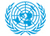

외교정책
국제기구
지역협력체
국제기구·지역협력체
홈 > 국제기구·지역협력체 > UN
UN
UN 개요
- 유엔의 기원
- - "유엔"(United Nations)이라는 명칭은 프랭클린 루스벨트 미국 대통령이 고안하였으며, 2차 세계대전 중 26개국 대표가 모여 추축국에 대항하여 계속 싸울 것을 서약하였던 1942.1.1 "연합국 선언"에서 처음으로 사용되었다.
- - 1945.4.25부터 6.26 간 샌프란시스코에서 개최된 "국제기구에 관한 연합국 회의"에 참석 한 50개국 대표는 1944.8월 부터 10월간 미국 덤버어튼 오크스에서 회합하였던 미국, 영국, 중국, 소련 등 4개국 대표들이 합의한 초안을 기초로 유엔헌장을 작성하였다. 50개국 대표들은 1945.6.26 유엔헌장에 서명하였으며 회의에 참석하지 않았던 폴란드가 추후 서명함으로써 51번째 서명국이 되었다.
- - 유엔은 미국, 영국, 프랑스, 중국, 소련과 여타 서명국 과반수가 유엔 헌장을 비준한 1945.10.24 공식 출범하였으며, 이후 매년 10.24일을 유엔의 날로 기념하고 있다.
- 유엔의 설립목적
- - 국제평화와 안전을 유지하며, 민족들의 평등권 및 자결 원칙에 기초하여 국가간의 우호관계를 발전시키며, 경제적, 사회적, 문화적 또는 인도적 성격의 국제문제를 해결하고, 모든 사람의 인권 및 기본적 자유에 대한 존중을 촉진하기 위한 국제적 협력을 달성하며, 이러한 공동의 목적을 달성함에 있어서 각국의 활동을 조화시키는 중심이 된다.
- 회원국 지위
- - 유엔은 유엔헌장상의 의무를 수락하고, 이러한 의무를 이행할 능력과 의사가 있다고 판단되는 모든 평화애호국에 개방되어 있다.
- - 유엔가입은 안전보장이사회(이하 안보리)의 권고에 따라 총회의 결정에 의하여 이루어 진다. 유엔헌장은 또한 헌장상의 원칙을 위반하는 회원국에 대한 권리 및 특권행사 정지와 제명에 관한 규정을 두고 있으나 이 규정이 실제로 적용된 예는 아직 없다.
- 공용어
- - 유엔헌장에는 영어, 불어, 중국어, 스페인어, 러시아어가 유엔 공식언어로 규정되어 있으나 그 뒤 아랍어가 총회, 안보리 및 경제사회이사회(이하 경사리) 공용어로 추가되었다.
UN 조직과 구조
유엔헌장상 6개의 주요기관은 다음과 같다
총회 (GA : General Assembly)
총회는 중추 심의기관이다. 총회는 모든 회원국으로 구성되며, 각회원국은 1개의 투표권을 가진다.
국제평화 및 안전, 신규 회원국 가입, 예산 문제 등 중요문제에 관한 총회의 결정은 3분의 2의 찬성으로 하며,
여타 문제에 대해서는 단순 과반수로 한다.
- 기능과 권한
- 유엔헌장에 규정된 총회의 기능과 권한은 다음과 같다.
- - 군축 및 군비통제에 관한 원칙 등 국제평화 및 안전유지를 위한 협력방안을 심의하는 한편, 회원국이나 안보리 또는 양자에 대하여 권고
- - 국제평화와 안전에 관련된 어떠한 문제도 토의할 수 있으며, 안보리에서 이미 다루고 있는 경우를 제외하고는 그러한 문제에 대해 회원국이나 안보리 또는 양측에 대하여 권고
- - 상기 경우를 제외하고 유엔헌장 범위내의 모든 문제에 관하여 또는 유엔 산하기관의 권한과 기능에 영향을 미치는 어떠한 문제에 대해서도 토의하거나 권고
- - 국제정치, 경제, 사회, 문화, 교육 및 보건분야에 있어서 국제협력을 촉진하며, 국제법의 발전 및 성문화를 장려하고 인권 및 기본적 자유를 실현하기 위하여 연구를 발의하거나 권고
- - 국가간의 우호관계를 해칠 수 있는 어떠한 사태에 대해서도 그 평화적 해결을 위해 권고
- - 안보리 및 여타 유엔 산하기관의 보고서를 접수하고 심의
- - 유엔 예산을 심의, 승인하며 회원국의 예산분담률을 결정
- - 안보리 비상임이사국, 경제사회이사회 이사국 및 신탁통치이사회 이사국을 선출하고, 안보리와 합동으로 국제사법재판소 판사를 선출하며, 안보리의 추천에 따라 사무총장을 임명
안전보장이사회 (SC : Security Council)
- 안보리는 유엔헌장에 따라 국제평화와 안전유지에 일차적 책임을 진다.
- 안보리는 미국, 영국, 프랑스, 중국, 러시아의 5개 상임이사국과 총회에 의해 선출되는 2년 임기의 10개 비상임이사국으로 구성되며 안보리이사국은 1개의 투표권을 가진다.
- 절차문제에 대한 결정은 9개 이사국의 찬성에 의해 이뤄지나, 실질문제는 5개 상임 이사국이 포함된 9개 이사국의 찬성에 의해 결정된다.
- 유엔헌장에 따라 모든 회원국은 안보리의 결정을 수락하고 이행하는데 동의하였다. 여타 유엔기관도 회원국 정부에 대해 권고를 할 수 있으나 안보리만이 회원국에 대해 이행의무를 지우는 결정을 내릴 권한이 있다.
- 기능과 권한
- - 유엔은 유엔헌장상의 의무를 수락하고, 이러한 의무를 이행할 능력과 의사가 있다고 판단되는 모든 평화애호국에 개방되어 있다.
- 유엔가입은 안전보장이사회(이하 안보리)의 권고에 따라 총회의 결정에 의하여 이루어 진다. 유엔헌장은 또한 헌장상의 원칙을 위반하는 회원국에 대한 권리 및 특권행사 정지와 제명에 관한 규정을 두고 있으나 이 규정이 실제로 적용된 예는 아직 없다.
경제사회이사회 (ECOSOC : Economic and Social Council)
- 경제사회이사회(이하 경사리)는 경제, 사회분야에 있어서 소위 "유엔가족"(UN Family) 을 구성하는 유엔, 전문기구 및 여타 기구간의 업무조정을 담당하는 주요 기관이다.
- 경사리는 54개국으로 구성되며 이사국의 임기는 3년으로서 매년 18개국씩 개선된다.
- 경사리에서 각국은 1개 투표권을 가지며 결정은 단순 과반수에 의한다.
- 기능과 권한
- 경사리의 기능과 권한은 다음과 같다.
- - 범세계적 차원의 경제 및 사회현안에 대한 토의의 중심무대로서 정책적 권고사항을 유엔회원국 및 유엔체제에 제공
- - 경제, 사회, 문화, 교육, 보건 및 관련사항에 관한 연구 및 보고를 하거나 권고
- - 인권 및 기본적 자유에 대한 존중과 준수를 촉진
- - 그 권한에 속하는 사항에 관하여 국제회의를 소집하고 총회에 제출하기 위한 협약 안을 작성
- - 전문기구와 유엔과의 관계협정을 교섭
- - 전문기구와의 협의, 전문기구에 대한 권고 및 총회와 회원국에 대한 권고를 통하여 전문기구의 활동을 조정
- - 회원국과 전문기구의 요청이 있을 때에는 총회의 승인을 얻어 서비스를 제공
- - 경사리가 다루고 있는 문제와 관련된 비정부간 기구와 협의를 실시
신탁통치이사회 (Trusteeship Council)
- 신탁통치 이사회는 유엔의 주요기관의 하나로서 신탁통치 제도하에 있는 신탁통치 지역 행정을 감독한다. 신탁통치 제도의 주요목적은 유엔 출범당시 11개 신탁통치 지역 주민의 복지를 증진시키고 자치 또는 독립으로의 점진적 발전을 도모하는데 있다.
- 신탁통치이사회의 헌장상 권한은 신탁통치지역 주민의 정치, 경제, 사회 및 교육 발전에 대한 시정권자의 보고서 심의, 신탁통치지역 주민 청원심사 및 신탁통치지역 방문 등이 있다.
- 신탁통치이사회는 안보리가 1994년 미국의 신탁통치지역이었던 팔라우(Palau)에 대한 신탁통치를 종식시키는 결의 (956호)를 채택하면서 1994.11월부터 활동이 종료되었다.
국제사법재판소 (ICJ : International Court of Justice)
- 헤이그에 소재한 국제사법재판소는 국제연합의 주요한 사법기관이다. 국제사법재판소 규정은 유엔헌장의 불가분의 일부를 구성한다.
- 국제사법재판소는 규정 당사국에 개방되어 있으며, 유엔회원국은 자동적으로 국제사법재판소 규정의 당사국이 된다. 유엔회원국이 아닌 국가도 안보리의 권고에 따른 총회의 결정으로 국제사법재판소 규정의 당사국이 될 수 있으며 스위스와 나우루가 이에 해당된다.
- 국제사법재판소 규정의 모든 당사국은 재판소에 제소를 할 수 있으며, 비당사국이라도 안보리가 정한 조건에 따라 재판소에 제소할 수 있다.
- 안보리는 법적 분쟁에 대해서는 국제사법재판소를 통한 해결을 권고할 수 있다.
- 총회와 안보리는 어떠한 법적문제에 대해서도 국제사법재판소에 권고적 의견을 요청할 수 있으며, 여타 유엔 산하 기관 및 전문기구도 총회의 승인을 받을 경우 각자의 활동 범위 내에 서 발생하는 법적문제에 대해 권고적 의견을 요청할 수 있다.
사무국(Secretariat)
- 사무국은 유엔본부 또는 현지에서 근무하는 국제공무원으로 구성되며 유엔의 일상 업무를 처리한다. 사무국은 유엔의 여타기관에 대해서도 서비스를 제공하며, 또한 그들의 제반 프로그램을 실시 운영한다. 사무국 최고 책임자는 사무총장 (Secretary-General)으로서 안보리의 권고에 의해 총회가 선출하며 임기는 5년으로서 연임 가능하다.
- 유엔 사무국의 임무는 평화유지활동부터 국제분쟁 중재에 이르기까지 유엔이 다루고 있는 문제만큼이나 다양하다. 사무국 직원들은 경제·사회의 변화추세와 제반문제에 대해 연구도 하고 또한 인권이나 지속 가능한 개발과 같은 주제에 대한 보고서도 작성한다.
- 이외에도 각종 국제회의 준비 및 개최, 유엔의 제반결정 이행 감독, 회의시 각 대표단 발언 통역, 유엔공식 언어로 문서 번역, 언론에 대한 유엔활동 설명 역시 사무국의 몫이다.
- 사무국 직원은 국제공무원으로서 사무총장과 함께 유엔에 대해서만 책임을 지며 외부기관이나 회원국 정부로부터는 어떠한 지시도 받지 않는다. 유엔헌장 100조에 따라 유엔회원국은 사무총장과 사무국 직원들이 가지는 책임의 국제적 성격을 존중해야 하며 이들이 임무를 수행하는데 있어 부적절한 방법으로 영향력을 행사해서는 안된다.
한국과 UN과의 관계
정부수립과 한국전쟁 당시의 대 유엔 외교
- 정부 승인과 통일을 위한 대 유엔 외교
- 1. 대한민국 정부는 유엔총회 결의 제 112(Ⅱ)B호에 따라 설치된 유엔 한국임시위원단 (UN Temporary Commission on Korea : UNTCOK)의 감시하에 실시된 총선을 통하여, 1948.8.15 정식으로 수립되었다. 신생 대한민국 정부의 당면 최우선 외교 과제는 유엔 및 모든 회원국으로부터 정부승인을 얻고 유엔 정회원국으로 가입, 국제 사회에서 정통성과 유일 합법성을 인정받는 것이었다.
- 2. 1948년 말 정부는 파리 개최 제3차 유엔총회에 최초로 정부대표단을 파견(수석대표 : 장면 박사)하 였고, 제3차 유엔총회는 아래 요지의 한국 관련 결의 제195(Ⅲ)호를 압도적 다수로 채택하였다.
- - 유엔 한국임시위원단(UNTCOK)의 보고 승인
- - 대한민국 정부는 한국민의 정당한 선거를 통하여 수립된 유일한 합법정부임
- - 유엔 한국위원단 (UN Commission on Korea : UNCOK) 구성, 유엔 한국임시 위원단의 활동 계승 등
- 3. 1949년 제4차 유엔총회는 한국 관련 결의 제 293(IV)호를 채택하였다 (정치위원회의 초청으로 조병옥 박사 참가)
- - 유엔 한국위원단(UNCOK)의 존속 및 강화
- - 유엔 한국위원단은 한국에서의 군사적 충돌 가능성 및 한국의 분단으로 야기되는 경제.사회적 장애를 제거하고 대의제 정부의 계속 발전을 위한 관찰과 협의 임무 수행
- 4. 한편, 북한은 1948.9.9 "조선 민주주의 인민공화국"을 선포, 유엔의 권능을 부인하고 유엔 한국위원단의 제사업 추진을 방해하였다.
- 한국 전쟁 당시의 집단 안보외교
- 1. 1950.6.25 북한의 남침공격에 대해 미국정부는 이 사태를 유엔 헌장상에 규정된 평화의 파괴 및 침략행위로 간주하고, 유엔 안전보장이사회를 긴급소집, 안보리는 "적대 행위의 즉각 중지와 북한군의 38선 이북으로의 즉시 철수"를 요구하는 결의 82호를 채택하였다.
- 2. 안보리는 6.29 "유엔 회원국들이 대한민국에 대한 무력 침공을 격퇴하고 이 지역의 국제평화와 안전을 회복하는데 필요한 원조를 제공할 것"을 권고하는 결의 83호를 채택하고, 또한 7.7 결의 84호를 채택하여 (1) 회원국들이 제공하는 병력 및 기타의 지원을 미국이 주도하는 통합 사령관(유엔군사령부)하에 두도록 권고, (2) 미국이 통합 사령관을 임명할 것을 요청하고, (3) 통합사령부에 참전 각국의 국기와 함께 유엔기 사용 권한을 부여하였다.
- 3. 소련이 7.27 그 동안 보이콧해 오던 안보리에 복귀, 8.1부터 윤번제 안보리의장직을 맡게 되었고, 이때부터 소련의 거부권 행사로 안보리는 한국사태와 관련된 어떠한 조치도 취할 수 없게 되자 유엔 총회는 미국이 제출한 `평화를 위한 단결 결의' (Uniting for Peace Resolution)'를 11.3 채택 (총회결의 377(V)호), 안보리가 국제 평화와 안전유지의 헌장상 1차적 책임을 다하지 못할 경우, 유엔총회에서 필요한 조치를 결의할 수 있도록 하였다.
- 4. 유엔총회는 10.7 한국에 독립된 통일민주정부수립과 한국내 구호와 재건의 책임을 수행하기 위해 7개국으로 구성된 유엔 한국통일부흥위원단 (UN Commission for the Unification and Rehabilitation of Korea : UNCURK) 설치를 결의(총회결의 376 (V)호)하고, 또한 12.1 총회 결의 제410(V)호로 한국 부흥계획을 추진하기 위해 유엔 한국재건단 (UN Korean Reconstruction Agency : UNKRA)을 설치하였다.
- 5. 유엔총회는 또한 1951.2.1 한국전에 개입한 중공군의 유엔군에 대한 적대행위 중지와 한국에서의 철수를 촉구하는 총회결의(제 498(V)호)를 채택하였다. 우리 정부는 1951.11.6 임병직씨를 대사자격으로 초대 주유엔 상임 옵서버로 임명하고 뉴욕에 대한민국 주 유엔 옵서버대표부를 설치하였다.
- 6. 1953.7.27 판문점에서 휴전 협정이 조인된 후, 유엔총회는 8.28 채택한 결의 712(Ⅶ)호를 통하여 1) 한국과 참전국의 영웅적 병사들에게 경의를, 전사한 병사들에게 조의를 표하는 동시에 2) 유엔 요청에 따라 무력침공을 격퇴하기 위하여 처음으로 취한 집단적 조치가 성공한데 대하여 만족을 표명하였다.
유엔총회 한국문제 토의와 대 유엔 외교
- 한국문제 연례 상정
- 1. 휴전협정 제60조와 1953.8.28 유엔총회 결의 711(Ⅶ)호에 입각, 한국문제의 평화적 해결을 위해 1954.4.26부터 개최된 제네바 정치회담이 결렬되자 한국문제는 다시 유엔총회로 되돌아가게 되었다.
- 2. 제9차 유엔총회는 1954.12.11 채택한 결의 811(IX)호를 통하여 한국에서 유엔의 목적이 1) 평화적 방법에 의하여 대의제 정부형태로 독립된 통일민주국가를 수립하고, 2) 이 지역에 국제평화와 안전을 완전히 회복하는데 있음을 재확인하였다.
- 3. 이후 유엔총회에서는 매년 제출되는 UNCURK 연차보고가 자동적으로 차기총회 의제에 포함됨으로써 한국문제를 매년 토의하게 되었고, 대한민국 대표를 단독 초청하여 동 토의에 참석시킨 가운데 유엔 감시하 인구비례에 의한 남북 총선거를 골자로 하는 '통한 결의안'을 가결시켰다.
- 4. 그러나 '아프리카의 해'로 불리던 1960년부터 아프리카의 신생독립국이 대거 유엔에 가입함으로써 미국중심의 유엔 내 기존세력판도가 아시아 및 아프리카 신생독립국들과 비동맹운동의 영향으로 다분히 반 서방적 성향을 띠게되자 한국 문제의 토의도 훨씬 복잡한 양상을 띠게 되었다.
- 5. 이러한 상황변화는 `통한 원칙'을 재확인하는 본질문제 토의보다는 남북한 대표를 한국문제 토의에 참석시킬 것인가에 대한 절차 문제 토의를 민감하게 만들었고, 1961.4.12 총회는 북한이 한국문제를 다루는 유엔의 권위와 권능을 수락할 것을 조건으로 남·북한 대표를 공히 초청하자는 미국 스티븐슨 대사의 수정 결의안(A/C. 1/837)을 채택하게 된다.
- 6. 1961년 이후 유엔총회에 연례적으로 상정된 한국문제 토의 양상은 본질 문제에 있어서는 유엔의 `통한 원칙'을 재확인하고 UNCURK 활동을 지속시키는 서방측 결의안을 압도적 다수로 채택하였으며, 북한 지지국가들은 매년 남. 북한 동시 초청안과 주한미군 철수 및 UNCURK 해체를 요구하는 결의안을 제출하였으나 부결되었다.
- 한국문제 연례 상정 지양 노력
- 1. 1968년부터 유엔내 세력분포가 점차 변화하면서 득표 노력에 상당한 외교력이 소모될 뿐 아니라 판에 박은 한국 문제의 연례 토의가 한국문제 해결에 도움을 주지 못하고 비생산적인 토의에 그치자 한국문제의 자동적인 연례 토의를 지양하는 방안을 강구하게 되었다.
- 2. 1968.12.20 제23차 유엔총회는 UNCURK로 하여금 그 보고서를 반드시 총회에 제출하지 않고 필요에 따라 사무총장에게 제출할 수 있게 함으로써 한국문제의 연례 자동상정을 피하도록 하자는 `재량 상정방식'을 내용으로 하는 결의안을 압도적 지지로 채택하였다.(총회 결의 제 2466호).
- 3. 그러나 UNCURK 보고서의 연례상정이 없더라도 친북 세력들이 UNCURK 해체안이나 외국군 철수안을 총회에 제출할 경우, 우리측도 대응안건을 총회에 제출하지 않을 수 없기 때문에 결국 한국 문제를 둘러싼 비생산적 토의의 한계를 극복할 수 없었으며 1969년 제24차 유엔총회 및 1970년 제25차 총회에서 친북한 국가들이 북한 입장을 지지하는 결의안을 들고 나옴으로써 종전과 같이 한국문제 토의와 표대결이 계속되었다.
- 4. 1971년 중화인민공화국이 유엔대표권을 확보하게 되고 유엔내 비동맹 회원국의 비율이 40%선을 넘게되자, 유엔에서의 우세한 표세를 전제로 했던 우리의 대 유엔 외교의 재조정이 불가피하게 되었다.
- 5. 1971.9.25 제26차 유엔총회는 우리측이 제출한 한국문제 토의 안건 일괄 연기안을 압도적 다수로 가결하였으며, 1972년 남북한간의 `7.4 공동성명'이 발표되자 제27차 유엔총회에서도 한국문제 토의 연기안이 압도적 다수로 통과되었다.
- 한국문제를 둘러싼 남북한 외교대결
- 1. 1973년 제28차 유엔총회에 앞서 우리 정부가 발표한 '6.23 평화통일 외교정책선언'은 대 유엔 정책에 일대 전환을 가져왔다. 특히 동 선언 제7항에서 "북한의 국제기구 참여와 통일시까지의 잠정 조치로서 남북한의 유엔 동시가입에 반대치 않겠다"고 밝힘으로써 많은 유엔 회원국들의 지지를 받았다.
- 2. 이무렵 북한은 1973.5월 세계보건기구(WHO)에 가입한 것을 계기로 동년 7월 뉴욕에 주 유엔 옵서버대표부를 설치, 제28차 총회시 북한이 처음으로 한국문제 토의에 옵서버로 초청되었다.
- 3. 제28차 유엔총회에 앞서 알제리에서 열린 제4차 비동맹 정상회의에서 북한의 열렬한 지지세력이었던 알제리, 쿠바 등 급진 좌경국가들이 한국 문제에 대해 북한 입장을 일방적으로 반영한 조항을 채택, 제28차 유엔총회에서 남북한 대결은 더욱 치열한 양상을 띠게 되었으나, 키신저 미 국무장관의 북경방문 등으로 미·중국간 화해 분위기가 급진전되어 유엔에서도 동·서 냉전적 표대결을 피하려는 경향이 대두되었다.
- 4. 이에 따라 남북한 양측 지지세력간 교섭을 통하여 표대결을 피하는 극적인 타협을 이루어 1) 남북대화를 통한 평화 통일의 촉구 2) UNCURK 해체를 내용으로 하는 합의 성명을 채택하고, 이에 따라 UNCURK는 1973.11.29 성명서를 발표하고 23년간에 걸친 활동을 종결하였다.
- 5. 1974년 제29차 총회에서도 한국문제를 둘러싼 표대결은 계속되어 우리측이 상정한 한반도 평화통일촉진을 위한 남북대화 재개 촉구내용의 결의안은 채택되었으나, 북한이 친북한 세력의 도움을 받아 상정을 시도하였던 외국군 철수와 유엔군사령부의 해체를 요구하는 결의안은 정치위원회에서 부결되었다.
- 6. 1975.8월 페루에서 개최된 비동맹 외상회의에서 월맹과 북한이 비동맹 회원국으로 가입이 결정됨으로써, 비동맹내 급진 좌경세력의 영향력이 최고조에 달하였고 이를 배경으로 1975년 제30차 유엔총회에서 남·북한 지지세력간 일대 외교 대결이 전개되었다.
- 7. 1975.9.22 제30차 유엔총회에서 우리측은 남북대화의 계속 촉구, 휴전협정 대안 및 항구적 평화 보장 마련을 위한 협상 개시 내용의 결의안을 제출하였고, 북한측도 유엔군 사령부의 무조건 해체, 주한 외국군 철수, 휴전협정의 평화협정으로 대체 등을 요구하는 결의안을 상정하였다. 상기 양 결의안이 표결에 부쳐진 결과 우리측 결의안 (제3390 A호)과 북한측 결의안(제3390 B호)이 동시에 통과됨으로써 유엔의 한국문제에 관한 해결 기능이 한계에 도달하였음을 보여주었다.
- 한국문제 토의 지양
- 1. 상기 제30차 총회 이후 정부는 핵심우방들과의 협의를 거쳐, 남북한간 유엔에서의 불필요한 경쟁이나 대결을 피하고 한국 문제를 '7.4 공동성명'에 입각, 남북대화를 통하여 해결한다는 기본정책 아래 제31차 총회부터 유엔에서의 한국문제 토의를 지양하기로 하였다.
- 2. 그러나, 북한 및 친북한 세력들은 1976.8월 남한으로부터의 핵무기 철수, 유엔군 사령부의 해체 등을 골자로 하는 공동결의안을 제31차 총회에 제출함으로써, 우리측도 남북대화를 통한 남·북한 문제해결, 휴전협정 대안마련을 전제로 한 유엔군 사령부의 해체 등을 내용으로 하는 공동결의안을 제출하였다. 북한측이 총회 개막직전 제출안건 철회를 요청하고, 우리측도 한국문제 불토의 방침에 따라 우리측 결의안을 철회함에 따라 제31차 총회에서는 한국문제가 토의되지 않았다.
- 3. 그후 1977년의 제32차 총회이래 북한측은 유엔총회에 한국문제에 관한 결의안을 제출하지 않음으로써 우리 정부의 한국문제 불상정, 불토의 방침이 관철되었다.